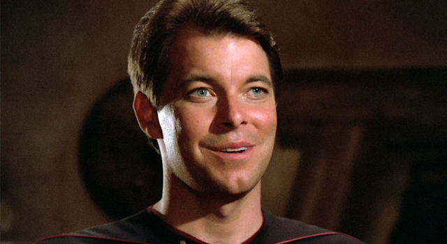

Star Trek: The Next Generation" beams you onto a souped-up USS Enterprise, way ahead in the 24th century. Captain Jean-Luc Picard's at the helm, a cool, collected leader, guiding a diverse crew of humans and aliens. They're out there exploring deep space, facing new adventures and mysteries. Totally the final frontier, but next-level!
CharactersJean-Luc PicardPlayed by: Patrick Stewart William T. Riker  Played by: Jonathan Frakes Data Played by: Brent Spiner |